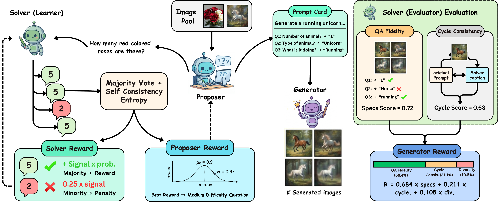
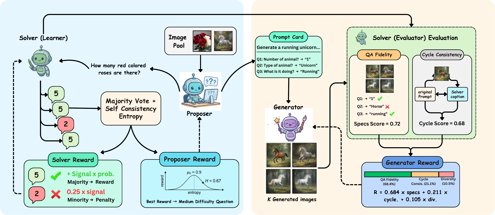
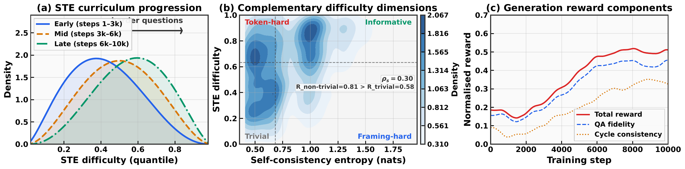
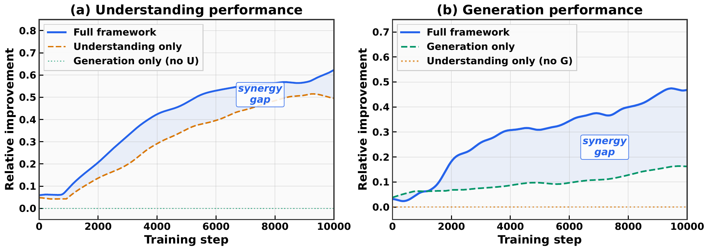
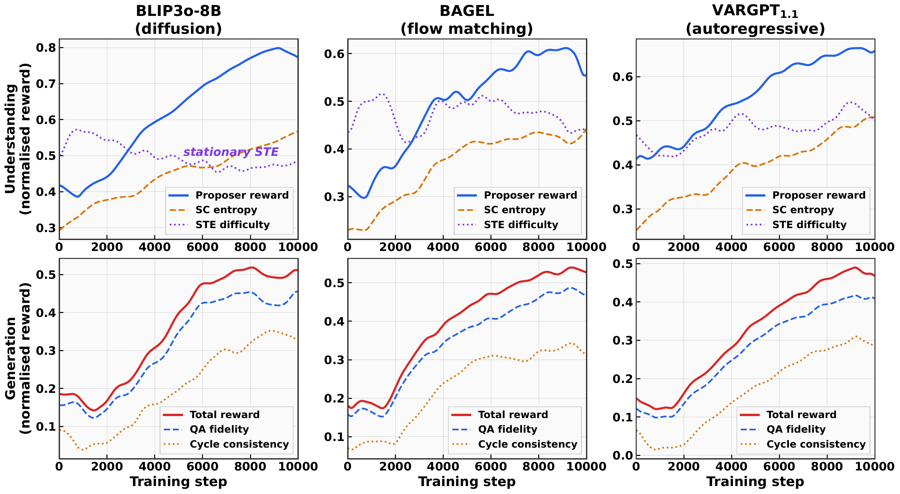
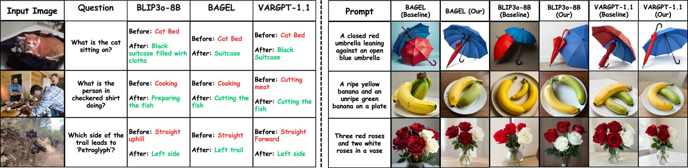
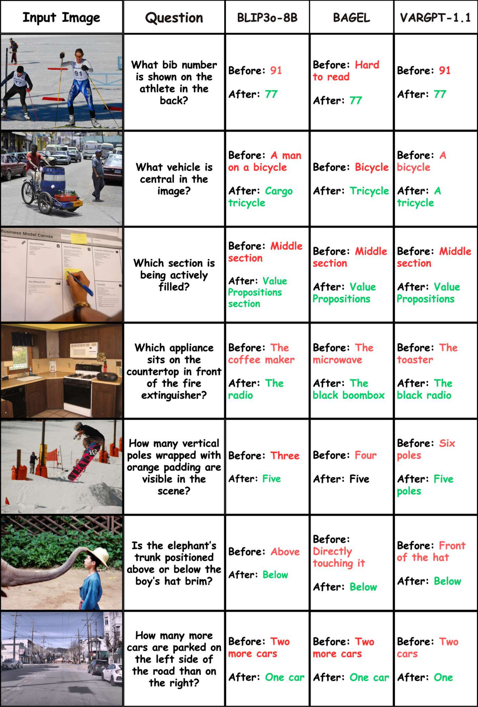
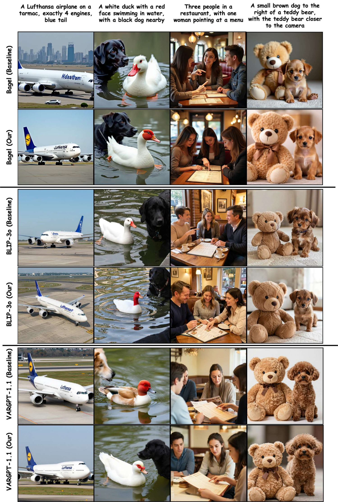
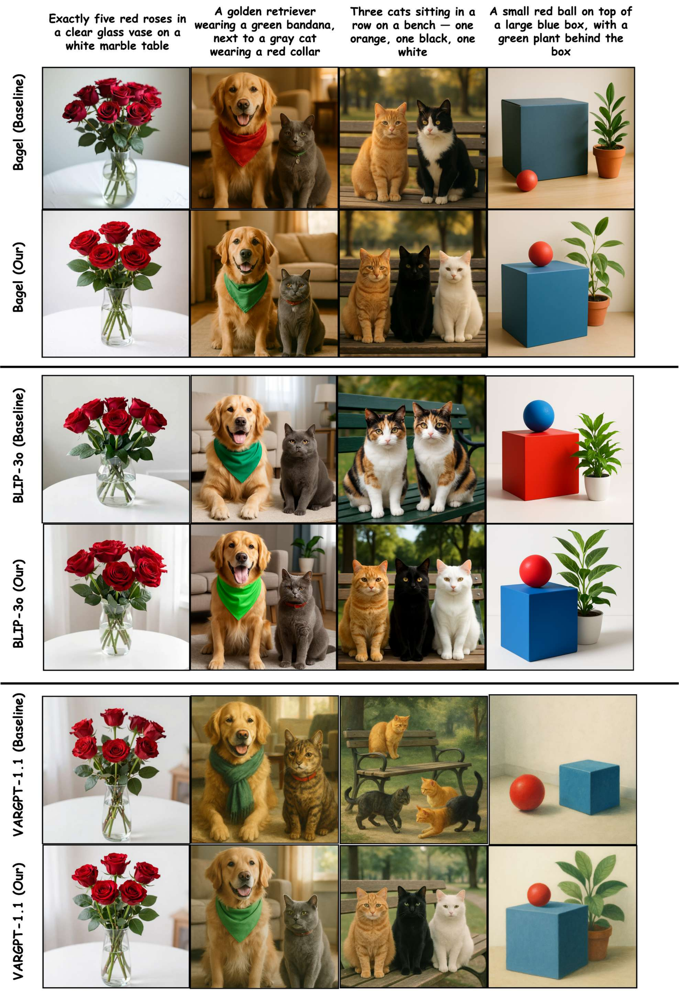

No labels
Training uses a 10k-image unlabeled pool. All captions, boxes, and QA annotations are discarded — supervision is derived entirely from the model's own consistency.
Self-Evolving Unified Multimodal Understanding and Generation via Self-Consistency Rewards

TL;DR
Most unified understanding-and-generation models still depend on curated post-training supervision — VQA labels, preference data, captions, or external reward models. We show that a single self-evolving recipe can improve both capabilities from raw images alone, with no human annotations and no task-trained reward or judge models, and that the same recipe transfers across diffusion, rectified-flow, and autoregressive backbones.
Training uses a 10k-image unlabeled pool. All captions, boxes, and QA annotations are discarded — supervision is derived entirely from the model's own consistency.
Rewards come from the model itself through self-consistency and a Solver that evaluates its own generations — no GPT-as-judge, reward model, or preference data.
The same role decomposition, reward design, and schedule improve all eight understanding metrics and lift GenEval by +3 points on BLIP3o-8B, BAGEL, and VARGPT-v1.1.
Why it is hard
Naively training on self-consistency collapses the learning signal and decouples the two tasks. Our two core ideas directly target these failures.
Sample-level self-consistency saturates: when every prompt framing yields the same answer, entropy hits zero even if the model is confidently wrong, leaving no curriculum signal. Our fix: Solver Token Entropy (STE), a continuous token-level difficulty signal that stays informative after agreement saturates.
Understanding and generation are usually optimized with separate objectives, so better comprehension does little for image synthesis. Our fix: the Solver becomes the internal evaluator for generation, so understanding gains directly sharpen generation-side rewards.
Framework
We add no architecture-specific modules. The base model stays frozen, and three lightweight LoRA adapters take on the Proposer, Solver, and Generator roles under a shared reward design.

Samples visual questions from unlabeled images, rewarded for questions near the Solver's competence frontier — neither trivial nor unsolvable.
Answers under N=7 prompt framings, supplies Solver Token Entropy, and doubles as the internal evaluator that scores generated images.
Synthesizes candidate images and is optimized from Solver-derived QA fidelity, cycle-consistency, diversity, and contradiction rewards.
Key ideas
Three components turn raw images into a stable training signal for both tasks.
A token-level uncertainty score from the Solver's next-token distributions, percentile-normalized over a rolling window. It recovers a continuous difficulty measure precisely when sample-level self-consistency goes degenerate.
Generated images are scored by QA fidelity (do Solver answers match the source image?) and cycle-consistent captioning (does the caption round-trip?), giving a multi-scale, label-free generation reward.
The loops are coupled only through the Solver: understanding updates improve the evaluator, and a stronger evaluator supplies sharper generation rewards — an asymmetric link, not a symmetric gradient exchange.
Results
The strongest evidence is the within-backbone delta: every base checkpoint and its self-evolved counterpart are evaluated under the same inference setting.
| Method | Params | MMMU | MMBench | TextVQA | SEED | RWQA | MM-Vet | MME-P | MME-C |
|---|---|---|---|---|---|---|---|---|---|
| Unified understanding and generation models | |||||||||
| Janus-Pro-7B | 7B | 41.0 | 79.2 | – | 72.1 | – | 50.0 | 1567.1 | – |
| Emu3 | – | 31.6 | 58.5 | 64.7 | 68.2 | 57.4 | 37.2 | 1243.8 | 266.1 |
| TokenFlow | – | 43.2 | 76.8 | 62.3 | 72.6 | 56.6 | 48.2 | 1551.1 | 371.1 |
| MetaMorph | – | 41.8 | 75.2 | 60.5 | 71.8 | 58.3 | – | – | – |
| Self-evolving methods | |||||||||
| UniGame | 7B | 43.8 | 83.2 | – | – | – | – | – | – |
| SUDER | 7B | – | 80.1 | – | 71.9 | – | – | – | – |
| UniCorn | 7B active | 53.8 | 84.1 | – | – | – | – | 1660.0 | 677.0 |
| ILLUME | 7B | 38.2 | 75.1 | 72.1 | 72.9 | – | 37.0 | 1445.3 | – |
| Our backbones (base → ours) | |||||||||
| BLIP3o-8B | 8B | 50.6 | 83.5 | 83.1 | 77.5 | 69.0 | 66.6 | 1682.6 | 647.1 |
| BLIP3o-8B (Ours) | 8B | 52.8+2.2 | 86.1+2.6 | 85.2+2.1 | 79.4+1.9 | 70.9+1.9 | 68.7+2.1 | 1698.4+15.8 | 660.3+13.2 |
| BAGEL | 7B active | 55.3 | 85.0 | 86.0 | 79.3 | 71.2 | 67.2 | 1687.0 | 701.0 |
| BAGEL (Ours) | 7B active | 58.8+3.5 | 87.1+2.1 | 88.5+2.5 | 81.8+2.5 | 73.9+2.7 | 69.5+2.3 | 1701.7+14.7 | 715.9+14.9 |
| VARGPT-v1.1 | 7B+2B | 48.6 | 81.0 | 82.0 | 76.1 | 67.5 | 51.9 | 1678.3 | 592.9 |
| VARGPT-v1.1 (Ours) | 7B+2B | 51.6+3.0 | 83.7+2.7 | 84.8+2.8 | 79.2+3.1 | 71.1+3.6 | 54.0+2.1 | 1695.7+17.4 | 606.4+13.5 |
| Method | Params | Single | Two obj. | Counting | Colors | Position | Color attr. | Overall |
|---|---|---|---|---|---|---|---|---|
| Unified understanding and generation models | ||||||||
| Show-o | – | 98 | 85 | 67 | 81 | 28 | 55 | 69 |
| Janus-Pro-7B | 7B | 99 | 89 | 59 | 90 | 79 | 66 | 80 |
| Emu3 | – | 98 | 71 | 34 | 81 | 17 | 21 | 54 |
| TokenFlow | – | 97 | 66 | 40 | 84 | 17 | 26 | 55 |
| Self-evolving methods | ||||||||
| UniGame | 7B | 99 | 91 | 62 | 93 | 80 | 68 | 82 |
| SUDER | 7B | 99 | 89 | 70 | 92 | 82 | 71 | 84 |
| UniRL (SFT) | – | 99 | 93 | 62 | 89 | 55 | 68 | 77 |
| UniCorn | 7B active | 99 | 94 | 80 | 88 | 61 | 73 | 82 |
| ILLUME | 7B | 99 | 86 | 45 | 71 | 39 | 28 | 61 |
| Our backbones (base → ours) | ||||||||
| BLIP3o-8B | 8B | 100 | 85 | 63 | 92 | 90 | 74 | 84 |
| BLIP3o-8B (Ours) | 8B | 99-1 | 93+8 | 71+8 | 94+2 | 90+0 | 75+1 | 87+3 |
| BAGEL | 7B active | 99 | 94 | 81 | 88 | 64 | 63 | 82 |
| BAGEL (Ours) | 7B active | 99+0 | 95+1 | 87+6 | 90+2 | 67+3 | 72+9 | 85+3 |
| VARGPT-v1.1 | 7B+2B | 96 | 53 | 48 | 83 | 13 | 21 | 53 |
| VARGPT-v1.1 (Ours) | 7B+2B | 97+1 | 59+6 | 56+8 | 85+2 | 15+2 | 24+3 | 56+3 |
Mechanism evidence
The diagnostic figures show complementary understanding signals, asymmetric loop coupling, and stable reward trajectories across model families.



In context
The full result tables above already place our runs alongside prior unified and self-evolving methods. The distinction is not only the scores, but what we deliberately avoid using to reach them.
Only raw images — no VQA labels, captions, or preference data at any stage of post-training.
No GPT-as-judge, reward model, or trained verifier; the Solver evaluates its own generations.
Identical roles, rewards, and schedule across diffusion, rectified-flow, and autoregressive backbones.
Qualitative results
Representative examples show corrections in object recognition, action understanding, and spatial reasoning, along with better color, count, and compositional fidelity in generation.




Citation
Copy the BibTeX entry below.
@misc{thawkar2026asksolvegenerate,
title = {Ask, Solve, Generate: Self-Evolving Unified Multimodal Understanding and Generation via Self-Consistency Rewards},
author = {Thawkar, Ritesh and Venkatraman, Shravan and Thawakar, Omkar and Shaker, Abdelrahman M and Khan, Fahad Shahbaz and Cholakkal, Hisham and Khan, Salman and Anwer, Rao Muhammad},
year = {2026},
note = {Manuscript}
}Acknowledgements
The computations were enabled by resources provided by LUMI hosted by CSC (Finland) and LUMI consortium, and by Berzelius resource provided by the Knut and Alice Wallenberg Foundation at the NSC.